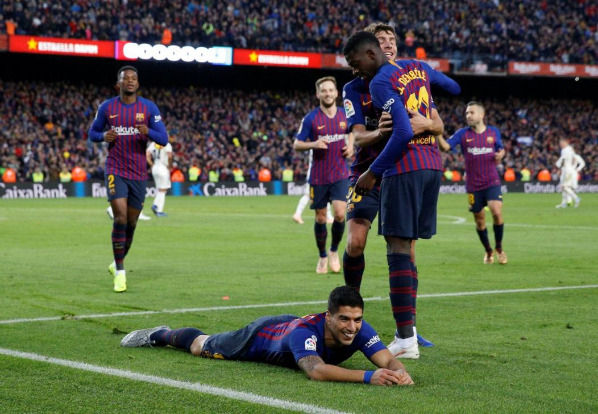
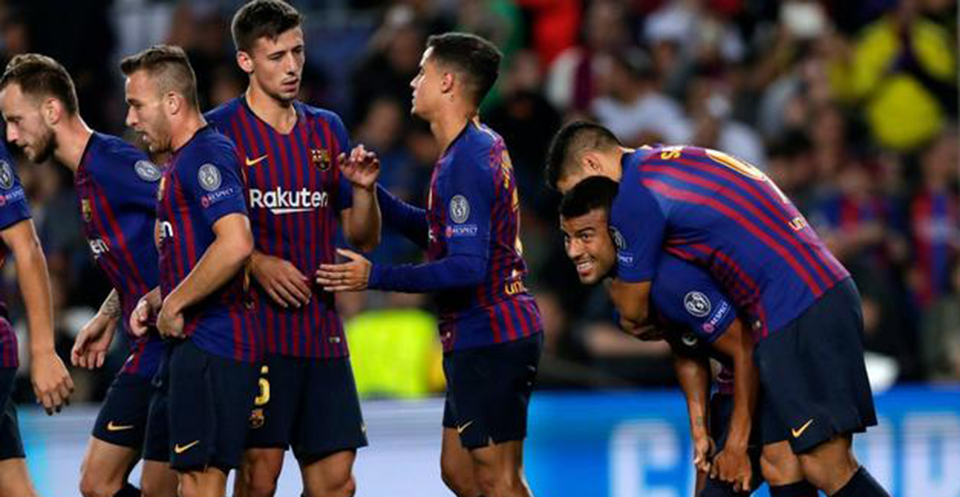

Shadman Rahman ⋅ 150 Reviews ⋅ 12 hours age
Barcelona ran riot to win the Clasico 5-1 on Sunday as Luis Suarez scored the hattrick that will surely spell the end of Julen Lopetegui's time as Real Madrid coach.
Barcelona were dominant at the Camp Nou for all-but a 15-minute period after half-time when the otherwise hapless Madrid threatened a comeback. All the failures that have underlined their recent problems under Lopetegui were on show here, poor finishing, dreadful defending and key players performing well below par, let alone at their best. There was also some bad luck, as Luka Modric hit the post at 2-1, while Suarez's second was a penalty, awarded only after consultation with the Video Assistant Referee. Philippe Coutinho scored the first and Arturo Vidal finished a late flurry but in between the game belonged to Suarez, who terrorised Madrid and made light of Lionel Messi's absence. But Suarez was not writing off Madrid, adding: "Every player and every team can suffer a poor game and a poor performance. You just have to keep trying and pulling together as a team. These are situations you can understand. They can happen to everyone." Philippe Coutinho scored the first and Arturo Vidal finished a late flurry but in between the game belonged to Suarez, who terrorised Madrid and made light of Lionel Messi's absence. The teaser doesn't show much more than Cavill so we still are in the dark as to what to expec.But Suarez was not writing off Madrid, adding: "Every player and every team can suffer a poor game and a poor performance. You just have to keep trying and pulling together as a team. These are situations you can understand. They can happen to everyone."
"A defeat is always hard, even more so against Barcelona," he said. "The result does not reflect the reality of the match, it seemed excessive. "We were much better in the second half, had a moment to get back into the game, had many chances to score, hit the post. But it did not happen, and more misfortunes arrived, more injuries, and third goal ended our hopes, and the punishment at the end was excessive. He also insisted that he had the strength to continue with the job. "We have had such bad luck over these weeks, but all runs come to an end. And I am sure the team will show another face. "We are in October. This is reversible with the time we have and I see myself with the strength to do so. The team is alive yet. I feel sad, but with the strength to continue."